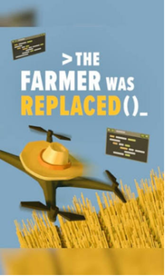
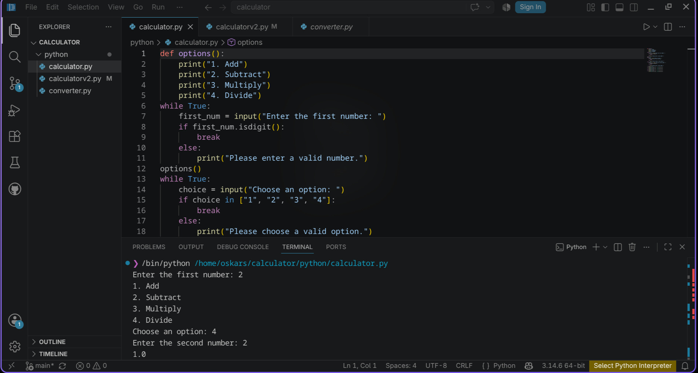
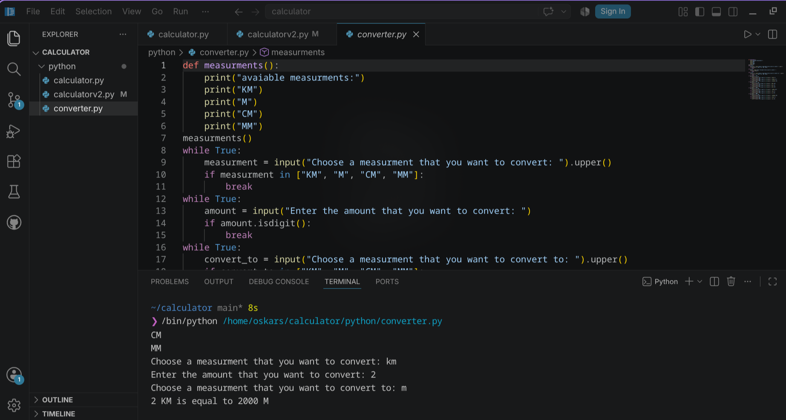
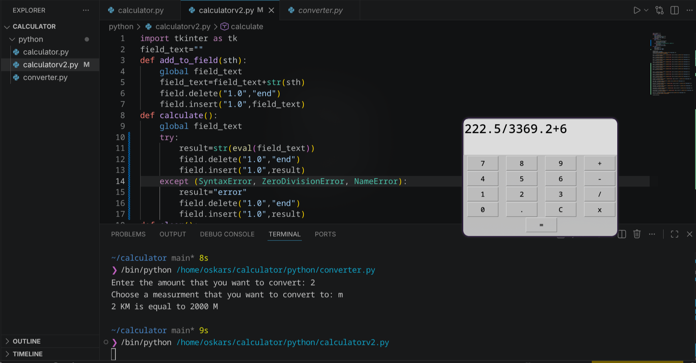

My very first experience with coding in python came to me a couple of weeks ago (during summer 2026) as I began playing a game called “The farmer was replaced” the game was developed to teach simple python syntax and educate the player on simple python concepts like 0 index ,while loops and creating and using values and definitions in a simple and fun way via automating a harvesting process on a ever changing farm.

After learning the basics of python in the game I watched a few tutorials in order to further enhance my knowledge of the language and then I decided to develop a simple calculator ,During the development i mostly focused on remembering the syntax and trying to optimize my code as much as possible by repeating as little lines of code as possible

Then I also decided to work on a unit converter project in order to further enhance my knowledge and just overall improve my skills.In this project my main goal was just to completely isolate myself from any assistance from google or AI and overall I fully developed it myself but after I wrote the first calculation that would convert km to m I got the rest of them autofilled for my by the agent active in the VS code

My final project was to improve the calculator by creating one with GUI but after a bit of research I realised that i will have to fully rebuild it as it will use completely different functions in order to make the calculations , so I followed a you tube guide in order to create this GUI calculator and the only thing I added from myself was the try and except statement that allows for errors to be shown if the user gets a syntax error or a division by zero error.